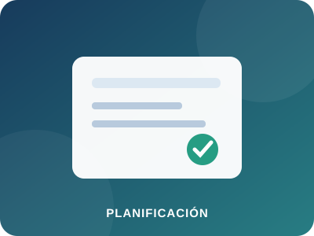
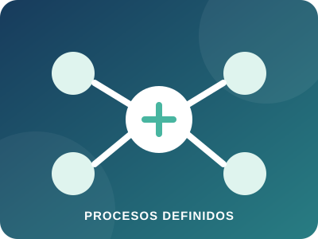
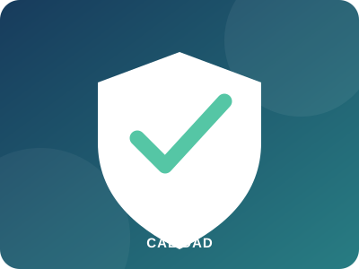
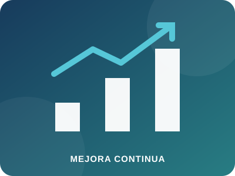
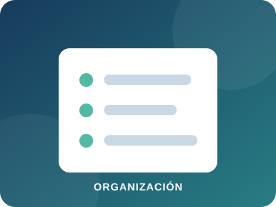
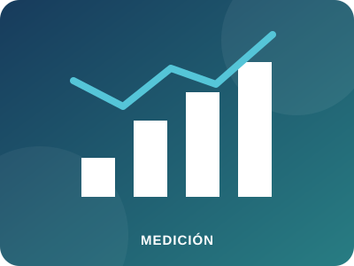

Evaluación de procesos
Permite conocer cómo trabaja una organización e identificar qué aspectos puede mejorar.
Leer másCALIDAD · PROCESOS · MEJORA CONTINUA
Conoce CMMI, un modelo que ayuda a las organizaciones a evaluar y mejorar sus procesos para desarrollar productos y servicios con mayor calidad.
Permite conocer cómo trabaja una organización e identificar qué aspectos puede mejorar.
Leer másPromueve procesos definidos, responsabilidades claras y un trabajo más consistente.
Leer másAyuda a medir el desempeño y a tomar decisiones para mejorar los resultados.
Leer másCAPABILITY MATURITY MODEL INTEGRATION
EVALUAR · GESTIONAR · MEJORARCMMI significa Capability Maturity Model Integration. Es un modelo de referencia que orienta a las organizaciones para mejorar la capacidad y la madurez de sus procesos.
LOS CINCO NIVELES DE MADUREZ
En la representación por niveles de madurez, CMMI describe una evolución desde procesos poco predecibles hasta procesos que se optimizan continuamente.
Ejemplos de cómo el modelo puede apoyar la gestión y mejora de una organización.

Definir planes, responsabilidades, recursos y seguimiento del trabajo.

Establecer formas de trabajo comunes para realizar las actividades.

Revisar indicadores y resultados para detectar oportunidades de mejora.

Analizar los resultados y aplicar cambios para fortalecer los procesos.

Ayuda a reconocer el estado de los procesos y a establecer acciones para mejorarlos.
Leer más...
Los datos permiten comprender el desempeño y tomar decisiones con mayor fundamento.
Leer más...